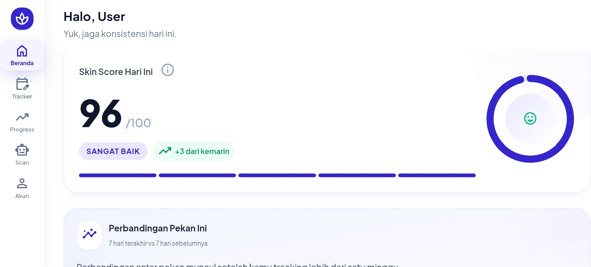

A skin journal that makes patterns visible
A skin journal that turns daily entries into patterns between habits, skincare, and acne. In progress; the research and copy are part of my work.
Read the case study
In progress
